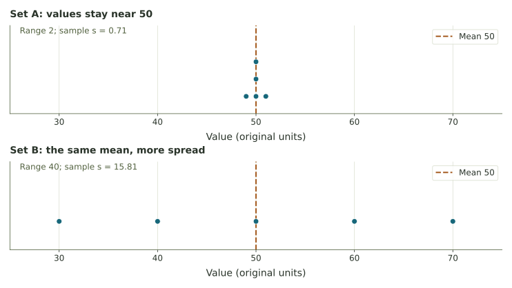

Week 3 / Explorer
Center and spread explorer
Change a data set and watch its mean, median, and spread.
Enter observations, then look at both center and spread
Choose a preset or enter observations separated by commas. Standard deviation uses the sample formula (n − 1).
Ctrl + Enter also analyzes the data.
Number of observations n
Mean
Median
Mode(s)
Range
Sample standard deviation s

Counts and histogram intervals
Exact observed values
Histogram counts
Bins include their left endpoint; the last bin also includes its right endpoint.
Follow the sample standard deviation
Use the table to explore how sample standard deviation is calculated.
Change just one value
Move the final value and compare the summaries.
Questions to investigate
- Compare the two “same mean” presets on the fixed scale. What changes even though both means are 50?
- Switch to a fitted scale. How could separately fitted graphs make spreads look more alike than they are?
- Load the complaint data, fit the scale, and try different histogram intervals. The observations do not change; what happens to the picture?
- Enter three identical values. Explain the range and sample SD. Then try a single observation.
- Change the final value in the second experiment. Use the ordered list to explain why the median stays at 8.
Continue with the laboratory, where each numerical response receives feedback.